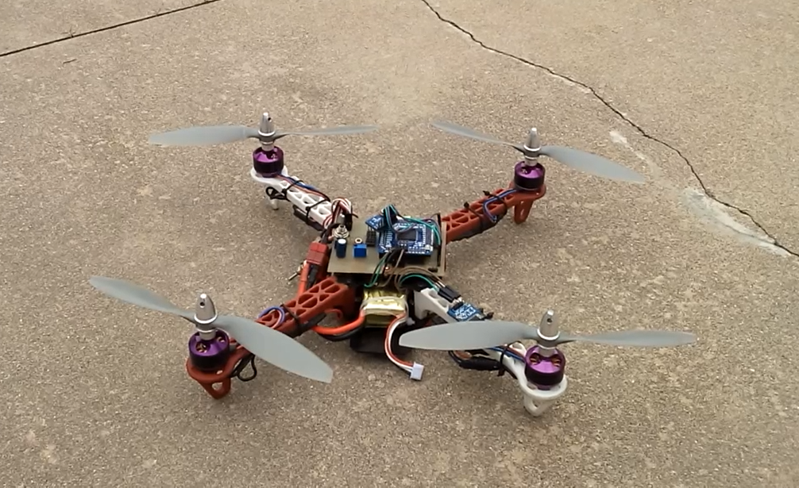

前后由来
大学快毕业的时候，总感觉没有点自己的东西能给四年时光留下印记，那时对飞行器很感兴趣所以自己动手做一个，送给自己的毕业礼物。
恼痛但快乐的过程
当时只是感兴趣，对四旋翼的姿态算法，平衡因子，无刷电机啊等专业知识并不是很了解。
又开始一通的查找资料学习，当然少不了一次次尝试。有一次惊险时刻，因为无刷电极的转速很高，可达上万转每分钟，有一次测试通电，螺旋桨没有固定死在无刷电机上，根本没有你反应的时间螺旋桨就打到了十米开外。只是清晰记得从耳边划过的声音。
当你尽力在做一件事的时候，总免不了会有感觉幸运的事发生，微笑以待。在这个期间认识了一个做航模的淘宝店主，巧合的是他离我们学校很近。便去找他聊天...
试飞
当时没有足够的钱搞一个专业遥控器来弄个，简单用手机通过蓝牙写了个控制逻辑，不过现在想想还是挺开心的